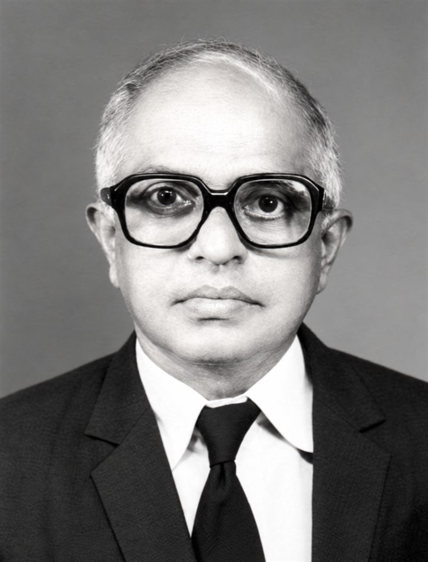
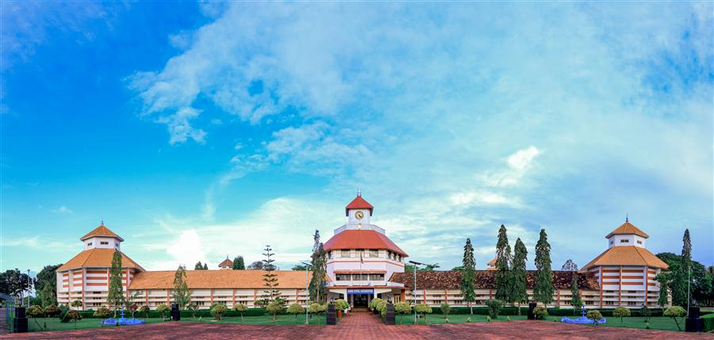

Special Address
Inspiring the Next Generation to Serve
Encouraging young people to join the Armed Forces.
Speaker to be announced


In remembrance of N. B. N. Sir
Sainik School Kazhakootam
Celebrating Educators Who Shape Generations
10:00 AM – 3:00 PM · programme begins 10:30 AM
Cariappa Auditorium, Pangode Military Station, Thiruvananthapuram
By invitation
In remembrance
N. Balakrishnan Nair 1929 – 2016
N. B. N. Sir served Sainik School Kazhakootam for 27 years, from 1962 until his retirement in 1989. Generations of cadets remember him for making science accessible, for nurturing curiosity, and for teaching with humility and compassion.
Guiding Lights is offered by his students in that spirit: to thank the teachers who shape young lives, and to ask what good teaching must look like in the years ahead.
The programme
Guiding Lights brings together school principals, teachers and distinguished voices to celebrate educators and explore their role in a changing world. It combines meaningful conversations with the felicitation of educators for their contributions to young lives.
“Guiding Lights” reflects the enduring influence of educators in helping young people discover their strengths, question thoughtfully and find their direction.
“Celebrating Educators Who Shape Generations” recognises their contribution beyond classrooms and examination results: shaping character, confidence and society.
The conversations
One question runs through the day: what makes a teacher unforgettable?
Special Address
Encouraging young people to join the Armed Forces.
Speaker to be announced
Fireside Chat
A personal conversation about the educators and experiences that influence our choices, values and aspirations.
Speakers to be announced
Panel Discussion
How schools can nurture curiosity, judgment, creativity and empathy as AI makes information readily available.
Panellists to be announced
Keynote
How school leaders can build institutions that develop capable, compassionate young people and support teachers through change.
Speaker to be announced
Felicitation ceremony
The ceremony recognises educators for their commitment and contribution to shaping generations: principals and teachers whose work reaches far beyond the classroom and the examination hall.
[Who is honoured and how they are chosen — to be added]
Saturday, 21 November 2026
Tea and snacks
10:30 Welcome and tribute to N. B. N. Sir
10:45 Special Address: Inspiring the Next Generation to Serve
The Teachers and Experiences That Shape Us
When Answers Are Everywhere, What Should Schools Teach?
Leading Schools That Shape Generations
Venue
Pangode Military Station, Thiruvananthapuram
Attendance is by invitation. Entry details for the military station will be shared with invited guests.
Directions in Google Maps